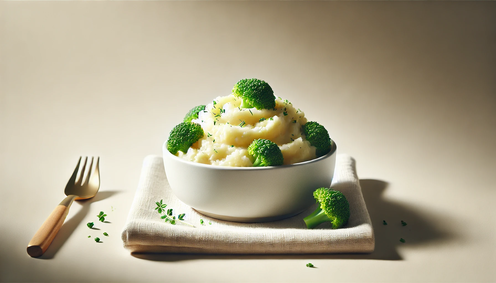
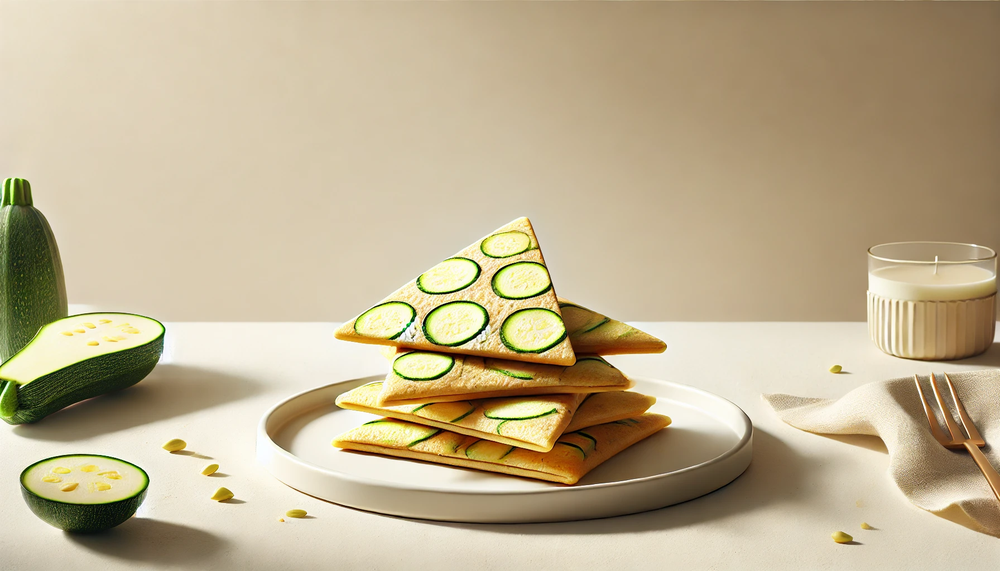
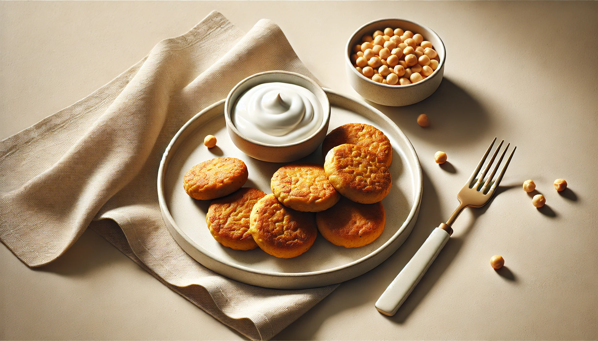
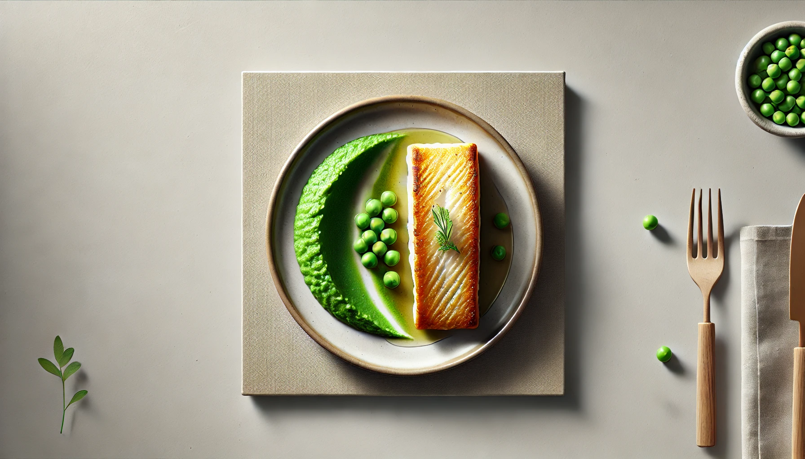
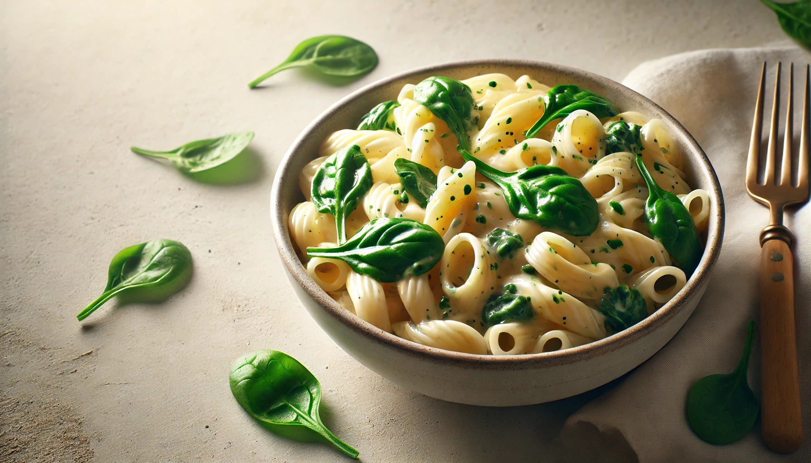
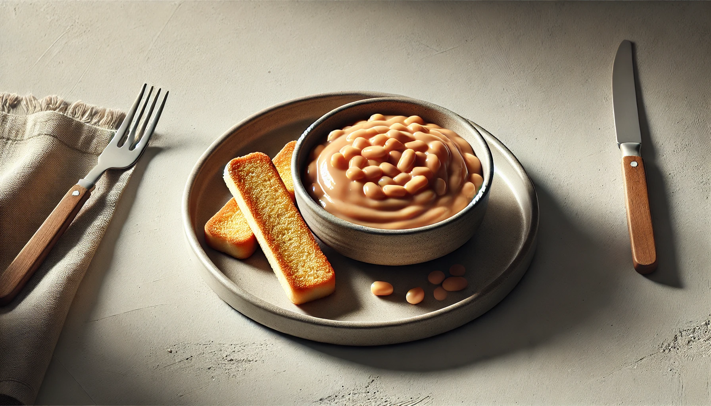
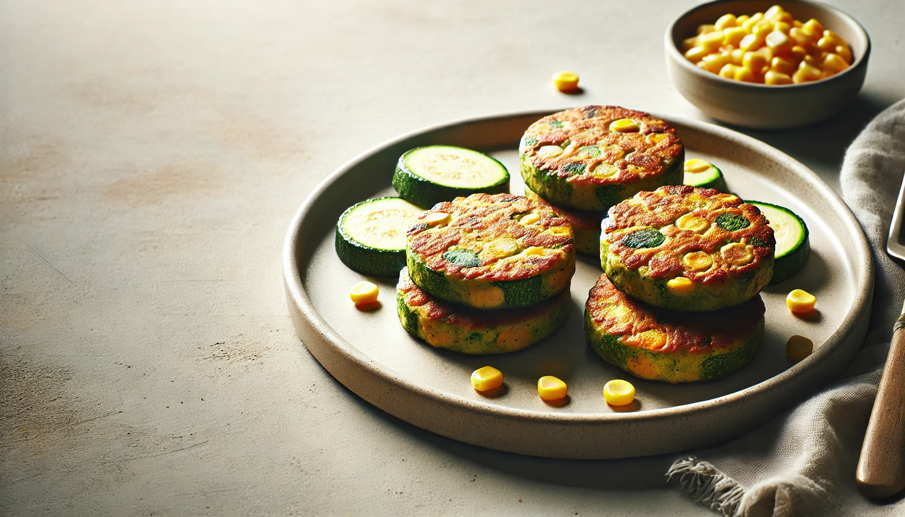

4-Week Toddler Lunch Plan
Week 2 | Colorful Combos & Finger Foods
This week focuses on easy-to-hold foods with more textures and colors, helping toddlers enjoy a variety of nutrients while building confidence in self-feeding.

Lunch Recipe
Cheesy Broccoli & Potato Mash
A creamy comfort bowl packed with vitamin C and calcium.
Ingredients
½ small potato (peeled and chopped)
2 small broccoli florets
2 tbsp shredded cheese
Instructions
1. Steam or boil potato and broccoli until soft.
2. Mash together with cheese while still warm.
3. Let cool slightly before serving.

Lunch Recipe
Mini Veggie Quesadilla
Soft and cheesy with hidden veggies - perfect for little hands.
Ingredients
1 small soft wholegrain tortilla
2 tbsp shredded cheese
1 tbsp finely grated zucchini or carrot
Instructions
1. Sprinkle cheese and veggies on one half of the tortilla.
2. Fold and toast on a dry pan until melted.
3. Cut into triangles and cool before serving.

Lunch Recipe
Chickpea Patties with Yogurt Dip
Protein-packed patties with a creamy side.
Ingredients
¼ cup cooked chickpeas (mashed)
1 tbsp oats
1 tbsp grated carrot
1 tbsp plain yogurt (for dip)
Instructions
1. Mix chickpeas, oats, and carrot into small patties.
2. Cook on a lightly oiled pan until golden on both sides.
3. Serve with plain yogurt for dipping.

Lunch Recipe
Baked Fish Fingers & Peas
A soft and flaky meal rich in protein and omega-3s.
Ingredients
1 small boneless fish fillet (e.g., cod)
1 tbsp breadcrumbs (optional)
¼ cup steamed peas
Instructions
1. Bake fish at 180°C (350°F) for 15 minutes or until cooked.
2. Flake into small pieces or cut into strips.
3. Serve with mashed or whole peas.

Lunch Recipe
Creamy Pasta with Spinach
A simple green dish that’s toddler-friendly.
Ingredients
¼ cup cooked pasta
1 tbsp cooked spinach (finely chopped)
1 tbsp plain cream cheese or yogurt
Instructions
1. Mix cooked pasta with spinach and cream cheese.
2. Stir until creamy and soft. Let cool before serving.

Lunch Recipe
Mashed Beans & Toast Fingers
High in iron and great for spreading.
Ingredients
¼ cup cooked kidney beans or white beans (mashed)
1 tsp olive oil
½ slice wholegrain toast
Instructions
1. Mash beans with olive oil into a soft spread.
2. Spread on toast and cut into strips.

Lunch Recipe
Zucchini & Corn Fritters
A handheld lunch with soft veggies and sweet corn.
Ingredients
2 tbsp grated zucchini (squeezed dry)
1 tbsp corn kernels (soft)
1 egg yolk
1 tbsp flour
Instructions
1. Mix all ingredients into a batter.
2. Cook in small rounds on a non-stick skillet until golden.
3. Cool and cut into toddler-sized pieces.
Week 3 ☛ Here